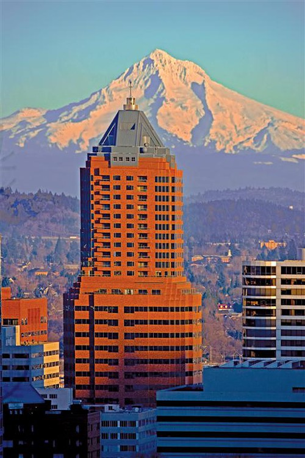
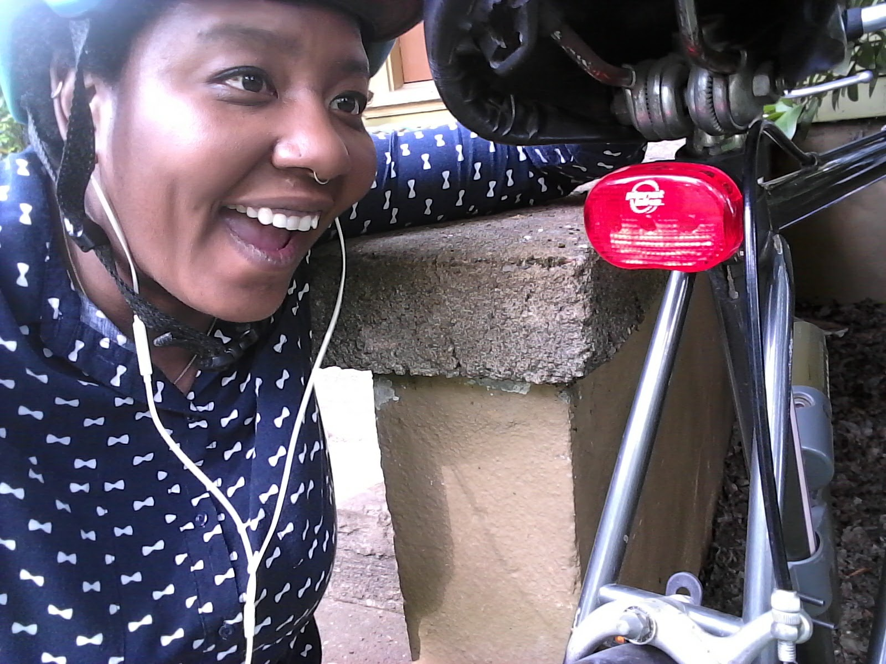

I'm originally from northern Indiana and moved away in 2007. I attended Indiana University Bloomington and graduated in 2007, after graduation, I moved to South Korea.
I was always interested in East Asian culture and I jumped on the opportunity to live abroad teaching English as a Second Language. I was young when I went there and I grew up a lot in those 7 years! I got to travel the world and made friends in every part of the world. I feel extremely lucky to have such a unique experience.
In late 2014, I moved to Portland, OR. I've lived in Portland for over 3 years and it's a great place to learn to code. I started a new job as a software Quality Assurance Specialist at a company downtown. I really enjoy the work and I learn new things everyday. Now, you can learn some new things about me!
As I mentioned before, I am starting a new career. I am new to the world of coding and programming, but I have worked for my company for nearly 2 years and I wanted a different career path. Lucky for me, my company was willing to take a chance on me.
Despite my lack of technical skill, I have a lot of knowledge about how my company works! And many of the skills that I need for my job I can learn along the way. I can still help the developers by using my knowledge of the business and previous experience interacting with our company's website and CRM system gives me insight that the development team can use to better build out our platforms. Since I currently don't have the same techical background as my teammates, this is why I decided to join Epicodus!
In downtown PDX, I work at an event facilitation company. A semi-fancy way of saying, we put on conferences around the US for corporate executives. My company is on the 9th and 10th floor of this building.
This is my neighborhood. It is a really popular area in this city. The neighborhood is growing exponentially and there are at least 10 new apartment complexes currently being built. This area is close to downtown but far enough away to enjoy a little peace and quiet.
My most prized possession is my bike. I like to take photos of myself with my bike. I do that A LOT in my freetime! My bike is my world! I have zen-esque moments of peace when I ride my bike. June is my favorite month in Portland because it is a month full of bike rides everyday day.
It is all a wild and crazy learning process for me, but I'm excited to see how I will grow! Thanks for taking the time to learn about me!